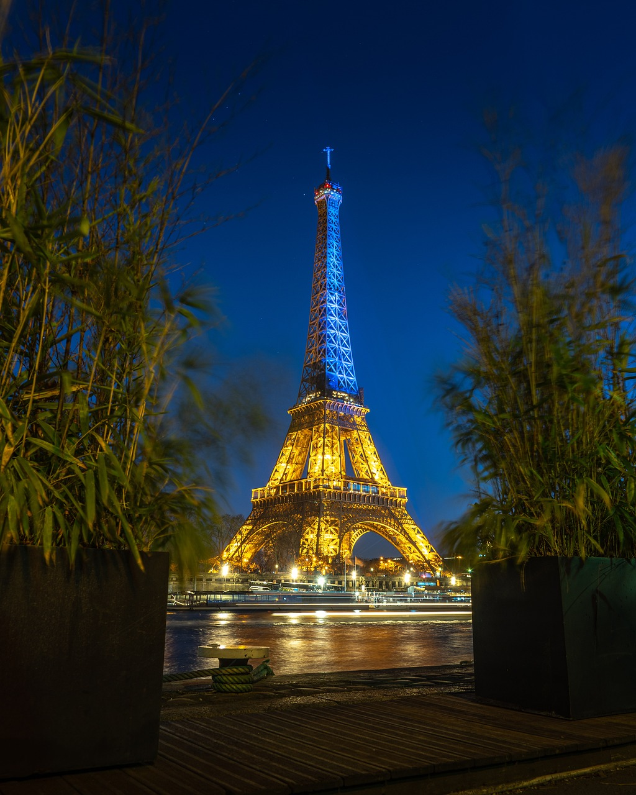
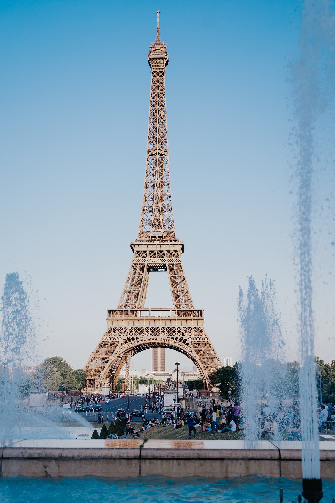

La Tour Eiffel
La tour Eiffel est une tour de fer puddlé de 330 m2 de hauteur (avec antennes) située à Paris, à l’extrémité nord-ouest du parc du Champ-de-Mars en bordure de la Seine dans le 7e arrondissement. Son adresse officielle est 5, avenue Anatole-France. Pendant plus de 40 ans, la tour Eiffel a été le bâtiment le plus haut du monde, près de 2 fois plus haut que les bâtiments les plus hauts du monde de cette époque (par exemple, 146,6 mètres plus haut que la pyramide de Khéops). Pour qui se demande pourquoi visiter la Tour Eiffel, on répondra qu'elle permet de prendre de la hauteur ! C'est la plus belle vue de Paris, à 360°. C'est aussi la découverte d'une construction très créative. Organisation et anticipation bienvenues. Portée par Gustave Eiffel, l'ingénieur derrière la Statue de la Liberté à New York, s la tour Eiffel est construite pour l'Exposition universelle de 1889, célébrant le centenaire de la Révolution française. À l'origine, elle ne devait rester que 20 ans, mais sa popularité en décidera autrement. La tour Eiffel marque également le coup. Depuis le début de l'année, les 12 étoiles symbolisant l'Union européenne ornent la façade de ce monument incontournable du paysage parisien. Ces éclairages ont une vocation esthétique mais également sécuritaire puisqu'ils permettent l'éclairage du parcours de visite et assurent le bon fonctionnement du monument de nuit. En plus de l'éclairage de la structure, un phare situé au sommet de la Tour se met aussi à fonctionner à la tombée de la nuit.

Qui a offert la tour Eiffel à la France ? Jules Ferry, président du conseil de 1883 à 1885, décide de relancer l'idée d'une nouvelle exposition universelle en France. Le 8 novembre 1884, il signe un décret instituant officiellement la tenue d'une exposition universelle à Paris, du 5 mai au 31 octobre 1889.

La tour Eiffel est inscrite aux monuments historiques depuis le 24 juin 1964 et est inscrite au patrimoine mondial de l'UNESCO depuis 1991. D'une hauteur de 312 mètres à l'origine, la Tour Eiffel est restée pendant 41 ans le monument le plus élevé du monde. La dixième exposition universelle est organisée à Paris en 1889, du 15 mai au 6 novembre, et c'est pour cette occasion que la tour Eiffel est construite. Elle a beau être solidement ancrée au sol, l'un des secrets de la Tour Eiffel que vous ignorez certainement est qu'elle bouge. Ainsi, en hiver, elle rétrécit de 4 à 8 cm. Sous l'effet des fortes chaleurs son métal se dilate. En 1976, un record d'inclinaison de 18 cm a été enregistré.
